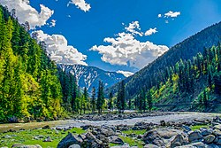
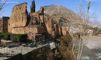
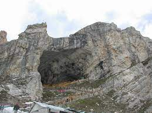
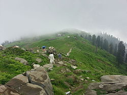

Kashmir (IPA: [kaʃmiːr]) is the northernmost geographical region of the Indian subcontinent. Until the mid-19th century, the term "Kashmir" denoted only the Kashmir Valley between the Great Himalayas and the Pir Panjal Range. Today, the term encompasses a larger area that includes the Indian-administered territories of Jammu and Kashmir and Ladakh, the Pakistani-administered territories of Azad Kashmir and Gilgit-Baltistan, and the Chinese-administered territories of Aksai Chin and the Trans-Karakoram Tract.
In 1820 the Sikh Empire, under Ranjit Singh, annexed Kashmir.[4] In 1846, after the Sikh defeat in the First Anglo-Sikh War, and upon the purchase of the region from the British under the Treaty of Amritsar, the Raja of Jammu, Gulab Singh, became the new ruler of Kashmir. The rule of his descendants, under the paramountcy (or tutelage[5][6]) of the British Crown, lasted until the Partition of India in 1947, when the former princely state of the British Indian Empire became a disputed territory, now administered by three countries: India, Pakistan, and China.
The district of Neelum (spelt also Neelam; Urdu: نیلم [niːləm]) is the northernmost of 10 districts located within the Pakistani-administered territory of Azad Kashmir. Taking up the larger part of the Neelam Valley, the district has a population of around 191,000 people (as of 2017). It was among the worst-hit areas of Pakistan during the 2005 Kashmir earthquake.
The district is bordered on the north and north-east by the Diamer District, the Astore District, and the Skardu District of Gilgit-Baltistan, on the south by the Kupwara District and the Bandipora District of Indian-administered Jammu and Kashmir, on the south-west by the Muzaffarabad District, and by the west by the Mansehra District of Pakistan's Khyber Pakhtunkhwa Province. The Neelum Valley was known before the partition as Kishanganga and was subsequently renamed for the village of Neelam. It flows from the Gurez Valley in Indian-administered Jammu and Kashmir and roughly follows first a western and then a south-western course until it joins the Jhelum River at Muzaffarabad. The valley is a thickly wooded[citation needed] region with an elevation ranging between 4,000 feet (1,200 m) and 7,500 feet (2,300 m), with mountain peaks on either side reaching 17,000 feet (5,200 m). The Neelum Valley is 144 kilometres (89 mi) long. The Line of Control runs through the valley, either across the mountains to the south-east or in places right along the river, with several villages on the left bank falling on the Indian side of the border
The Neelum District was part of the Muzaffarabad District until 2005. It is made up of two tehsils: the Athmuqam Tehsil, in which the district headquarters is located, and the Sharda Tehsil. The Neelum District is the largest district of Azad Kashmir by area. The valley extends for approximately 200 kilometers along the Neelum River. This is a generally poor region, reliant on subsistence agriculture and handicrafts, with tourism growing in importance in recent years. According to the Alif Ailaan Pakistan District Education Rankings 2015, The Neelum District is ranked 33 out of 148 districts in terms of education. For facilities and infrastructure, the district is ranked 136 out of 149.
Red Fort (Urdu: لال قلعہ), also known as Muzaffarabad Fort, is a 17th-century fortification located in Muzaffarabad, Azad Jammu and Kashmir, Pakistan. It was built by the Chak dynasty of Kashmir.[1][2] The fort is locally referred to as the 'Rutta Qila' or just 'qila'
Chak rulers of Kashmir anticipated a threat to the city from the Mughals. Construction was initiated in 1559 at a strategic location. The Mughal Empire annexed Kashmir in 1587, and the fort lost its importance. Finally, the construction of the fort was completed in 1646 in the reign of Sultan Muzaffar Khan of the Bomba Dynasty — the founder of Muzaffarabad
The architecture of the fort shows that great experts in design and structure participated in its construction. It is surrounded on three sides by the Neelum River formerly known as the Kishenganga River. The northern part of the fort had terraces with steps leading to the bank of the river. The eastern side was very well protected from the hazards of flood waters, but some parts on the north side have suffered damage. There used to be an inn at the entrance to the fort, but only traces of that structure remain now
Amarnath Temple is a Hindu shrine located in Anantnag district of the Jammu and Kashmir, India. The cave is situated at an altitude of 3,888 m (12,756 ft), about 168 km from Anantnag city, the district headquarter, 141 km (88 mi) from Srinagar, the summer capital of Jammu and Kashmir, reached through Pahalgam town. The shrine represents an important part of Hinduism. The cave, located in Lidder Valley, is surrounded by glaciers, snowy mountains and is covered with snow most of the year, except for a short period of time in summer when it is open to pilgrims. In 1989, pilgrims numbered between 12,000 and 30,000. In 2011, the numbers reached a peak, crossing 6.3 lakh (630,000) pilgrims. In 2018 pilgrims numbered 2.85 lakh (285,000). The annual pilgrimage has varied between 20 and 60 days. The Amarnath cave, abode of the Mahamaya Shakti Peetha, is one of the 51 Shakti Peethas, temples throughout Indian Subcontinent that commemorate the location of fallen body parts of the Hindu deity Sati
TThe book Rajatarangini (Book VII v. 183) refers to Krishaanth or Amarnath. It is believed that, in the 11th century AD, Queen Suryamati gifted trishulas, banalingas and other sacred emblems to this temple.[14] Rajavalipataka, begun by Prjayabhatta, contains detailed references to the pilgrimage to Amarnath Cave Temple. In addition, there are further references to this pilgrimage in many other ancient texts. According to legend, Sage Bhrigu was the first to have discovered Amarnath. A long time ago, it is believed that the Valley of Kashmir was submerged underwater, and Sage Kashyapa drained it through a series of rivers and rivulets. As a result, when the waters drained, Bhrigu was the first to have darshan of Shiva at Amarnath. Thereafter, when people heard of the lingam, it became an abode of Shiva for all believers and the site of an annual pilgrimage, traditionally performed by lakhs of people in July and August during the Hindu Holy month of Savan. François Bernier, a French physician, accompanied Emperor Aurangzeb during his visit to Kashmir in 1663. In his book Travels in Mughal Empire, he provides an account of the places he visited, noting that he was "pursuing journey to a grotto full of wonderful congelations, two days journey from Sangsafed" when he "received intelligence that my Nawab felt very impatient and uneasy on account of my long absence." The "grotto" referenced in this passage is obviously the Amarnath cave — as the editor of the second edition of the English translation of the book, Vincent A. Smith, makes clear in his introduction. He writes: "The grotto full of wonderful congelations is the Amarnath cave, where blocks of ice, stalagmites formed by dripping water from the roof are worshipped by many Hindus who resort here as images of Shiva...."[16] In 1895, pilgrims would first travel to Kheer Bhawani for a brief stop.[17] Sustained by free rations given by the state, the pilgrims would then travel to Srinagar.[17] From Srinagar, in batches, the pilgrims would then head up Lidder Valley, stopping at locations for holy dips.[17] At Mach Bawan, local Hindus would join them. Maliks of Batok were responsible for the route during these years.[17] Sister Nivedita, in Notes of Some Wanderings with the Swami Vivekananda, writes of Swami Vivekananda's visit to the cave in 1898
Tolipir (Urdu: تولی پیر) is a hilltop area situated in Tehsil Rawalakot in the Poonch District of Azad Kashmir. Its approximate elevation is about 8800 ft above sea level. It is about 30 km, or a 120-minute drive, from Rawalakot in Azad Kashmir.[1] Abbaspur, Bagh and Poonch River can be viewed from Toli Pir. Tolipir is the highest mountainous location in the northeastern area of Rawalakot; it is the point of origin of three different mountain ridges. The tourist rest house on the way to Toli Pir is also situated in a scenic location.[citation needed] There are some remains of an old mazar on the highest hilltop.[2] Tolipir is most accessible during the summer months; the weather generally becomes colder from October through March.
